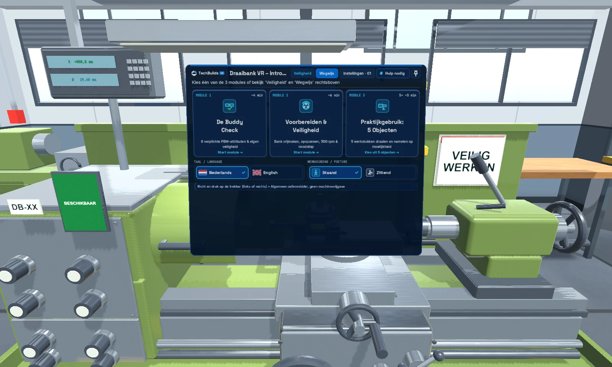

Twee knoppen, staand of zittend
Knop indrukken is vastpakken, loslaten is neerleggen — met correct gespiegelde 3D-controllers in beeld én keuze tussen staand werken of een comfortabele zittende modus.
Als één van onze technische VR-applicaties bereidt Draaibank VR (v2.5.6) studenten algemeen voor volgens Nederlandse en Europese veiligheidsrichtlijnen — zonder specifieke merk- of typetraining. Op het vernieuwde 6-tegels breedbeeldscherm doorloopt elke student drie logische onderdelen voordat hij of zij achter de echte draaibank in het lokaal gaat staan.

De docent zet vanaf de docenttablet elk onderdeel los klaar of laat de student alle drie de onderdelen achter elkaar doorlopen. Klik hieronder door de onderdelen én de bijbehorende VR-schermen uit de nieuwste build.

Klik op de 4 controlepunten om het verloop in VR te zien:
Net als bij al onze andere technische VR-applicaties hoeven studenten geen gamers te zijn en leren zij geen trucje voor één merk. Met een mobiele VR-kar of een losse docenttablet begeleidt de docent de groep rustig en AVG-vriendelijk.
Knop indrukken is vastpakken, loslaten is neerleggen — met correct gespiegelde 3D-controllers in beeld én keuze tussen staand werken of een comfortabele zittende modus.
Via het Docent Dashboard v2.4.0 zet de docent het gewenste onderdeel klaar, kijkt pas live mee zodra een student rechtsboven in VR op ‘Hulp nodig’ tikt (AVG) en sluit alle apps na afloop gezamenlijk af.
Na de drie onderdelen in VR loopt de vakdocent vijf praktische veiligheidspunten samen met de student langs bij de echte draaibank in het lokaal voor de praktijkvrijgave.
Wij ontwikkelen algemene technische VR-applicaties voor het hele techniekonderwijs. Combineer Draaibank VR bijvoorbeeld met Elektrotechniek VR (NEN 3140 & EN 50110, + € 5.000,- eenmalig excl. BTW) of laat een nieuwe technische VR-applicatie op maat bouwen op hetzelfde Docent Dashboard.
Omdat deze VR-applicatie geen typetraining is voor één specifiek merk, volgt elk van de drie onderdelen de vaste veiligheidsregels uit de Nederlandse wetgeving én de geldende Europese richtlijnen:
| Nederlandse & Europese richtlijn | Vaste regel aan de draaibank | Waar de student dit doorloopt (v2.5.6) |
|---|---|---|
| NL: Arbocatalogus Metaal & Onderwijs EU: Richtlijn 89/656/EEG (PBM) |
Geen werkhandschoenen bij draaiende delen, geen losse kleding of sieraden (oorbellen, horloge, ringen), lang haar vast en altijd een veiligheidsbril op. | Onderdeel 1 (De Buddy Check): bij de medestudent gaan eerst de werkhandschoenen uit en daarna met 1 klik oorbellen, polshorloge en ringen in het bakje Sieraden, gevolgd door de eigen PBM-check. |
| NL: Arbobesluit art. 7.7 & 7.14–7.16 EU: 2006/42/EG, (EU) 2023/1230, EN ISO 23125 & EN ISO 13850 |
Draaibank vrij van los gereedschap, klauwplaatsleutel direct uitnemen, beschermkap gesloten en bij onbalans direct ingrijpen met de noodstop zonder automatische herstart. | Onderdeel 2 (Voorbereiden & veiligheid): bank vrijmaken op het vrijliggende 6-tegels scherm, spanningsloos opspannen, sleutel terugplaatsen en direct de noodstop indrukken bij slingering. |
| NL: Arbobesluit art. 7.5 EU: Richtlijn Arbeidsmiddelen 2009/104/EG |
Elke bewerking starten op een gecontroleerde machine, pas meten bij volledige stilstand (0 rpm) en spanen veilig weghalen met spanenhaak en kwast. | Onderdeel 3 (Praktijkgebruik — 5 werkstukken in 2 fasen): elk werkstuk start verplicht met Fase 1/2 Voorbereidende check op een onvoorbereide bank, gevolgd door Fase 2/2 Draaien, 0 rpm afwachten & 2,5× schuifmaat-loep. |